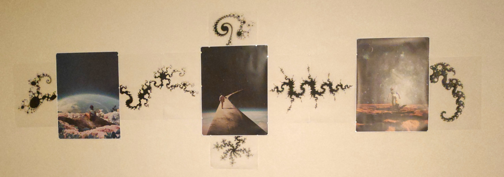
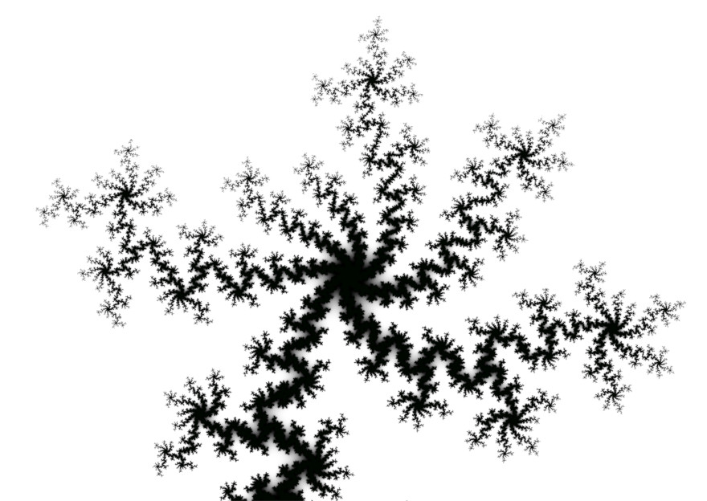
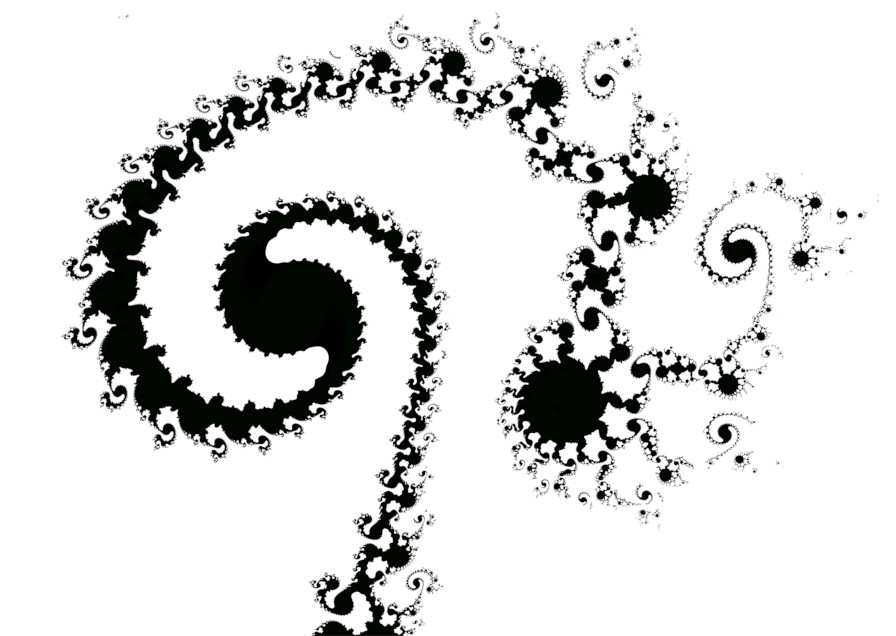
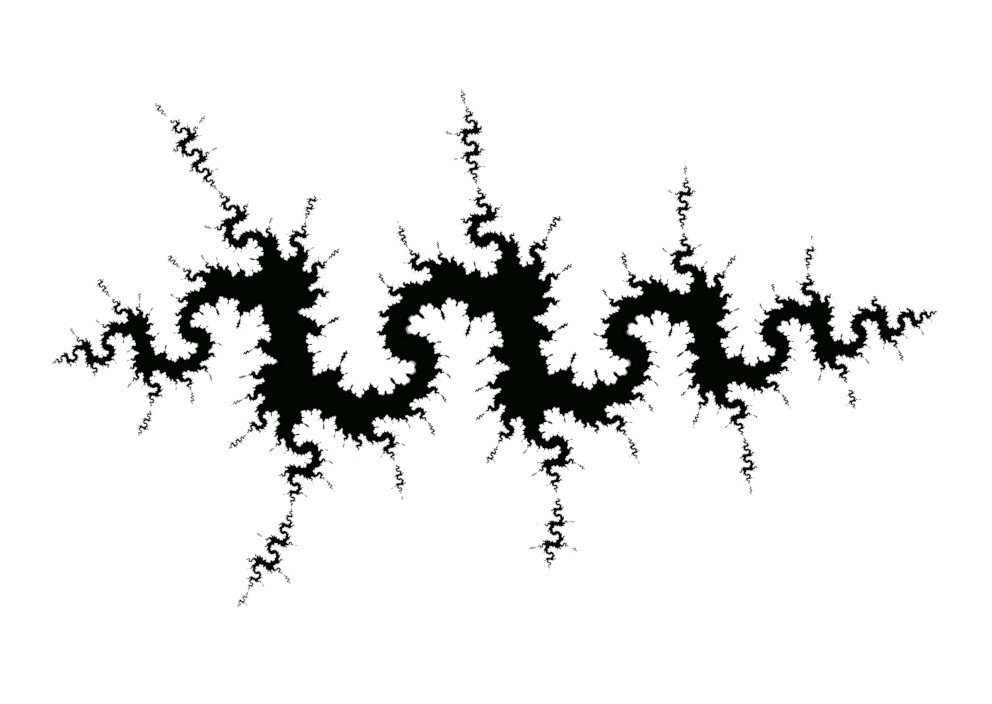
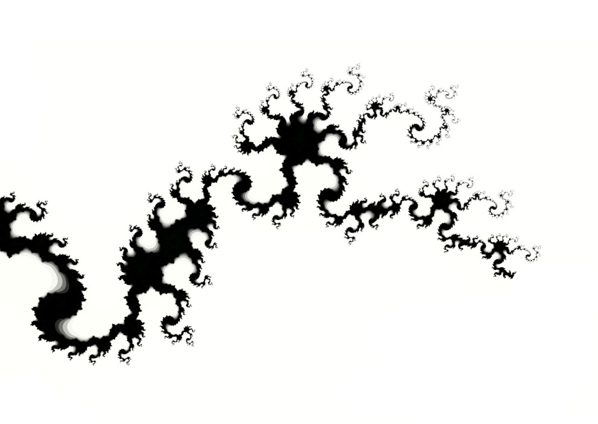
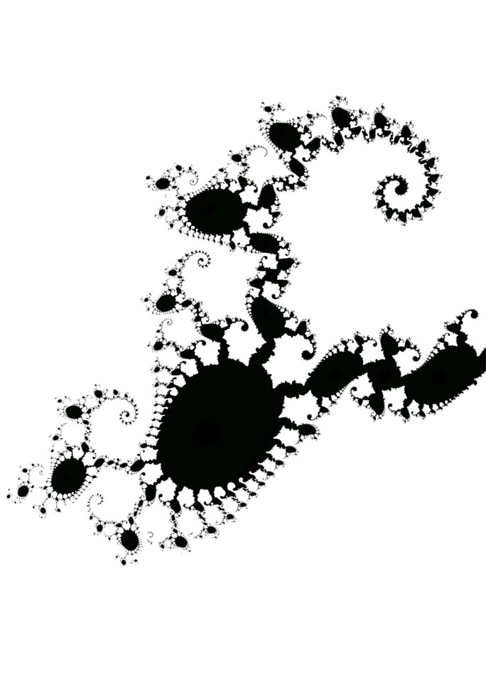
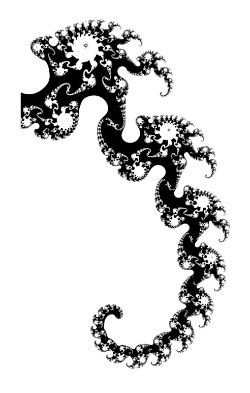

Fraktale an der Wand

Schon seit einiger Zeit beschäftige ich mit Fraktalen. Anfangs hatte ich mir ein kleines C++
Programm geschrieben, um Fraktale zu berechnen. Das war allerdings sehr zeitaufwändig gemessen daran,
dass es mir eigentlich nur darum ging, schöne Bilder zu erstellen. Deshalb hatte ich mich nach einiger
Zeit nach einer Alternative umgesehen. Dabei bin ich auf Ultra Fractal gestoßen. Und seit dem nutze ich
Ultra Fractal. Ich bin zwar noch nicht wirklich gut darin, dieses Programm zu benutzen, aber ein
bisschen was bekomme ich schon hin. Eines Tages hatte ich die Idee, eine freie Stelle an der Wand in
meinem Badezimmer mit Fraktalen zu verzieren. Daraus ist bisher noch nichts geworden, allerdings hatte
ich einige Tage später die Idee, die drei Poster, die ich in meinem Wohnzimmer hängen habe, ebenfalls
mit Fraktalen zu verzieren. Die Idee war, aus diesen Posten zusammen mit Fraktalen eine verflochtene,
detailreiche Skulptur zu machen. Diese Idee hat mir wirklich gefallen. Also habe ich mich am selbsen
Abend noch hingesetzt und ein Fraktal gesucht, welches sich ausdrucken lässt. Das hatte ich auch relativ
schnell gefunden. Danach kam die Frage, auf was ich denn dieses Fraktal drucken könnte. Weißes Papier
kam nicht in Frage, da es im Kontrast mit der Tapete stehen würde. Eine andere Option wäre eine Folie,
aber da hatte ich Bedenken, dass es zu sehr spiegeln würde. Irgendwann bin ich auf transparentes Papier
gestoßen. Und das schien mir genau zu passen. 11€ später hatte ich den Druck in Auftrag gegeben. 11€ für
ein Din-A3 Blatt bedrucken. Das war recht teuer, aber den Versuch wert. Einige Tage später kam das Paket
und ich war wirklich neugierig. Ich packte es so bald wie möglich aus, betrachtete des Bild und war
zufrieden. Dann hing ich es an die Wand und war immer noch zufrieden. Dann ließ ich es einige Tage dort
hängen, um zu sehen, wie ich in ein paar Tagen darüber denken würde und nach einer Woche war ich auch
noch zufrieden. Also kam der nächste Schritt. Natürlich wollte ich nicht noch ein mal 11€ für eine
weitere Din-A3 Seite ausgeben, also bestellte ich 100 Blatt Din-A4 transparentes Papier, um es dann
einfach selbst zu bedrucken. Das Papier trad schon am nächsten Tag ein und ich machte mich dann nochmal
ein paar Tage später ans Werk. Die ersten Drucke gingen in die Hose. Das größte Problem war, dass das
transparente Papier die Druckerfarbe nicht gut aufnahm. Wenn das Papier aus dem Drucker kam musste ich
daneben stehen und es vorsichtig entgegen nehmen, damit nichts verschmiert. Nach 5 Minuten war die Farbe
aber trocken und es konnte nichts mehr passieren. Ein kleiner Nachteil davon war auch, dass das Papier
sich beim trocknen leicht verformte, aber nichts was wirklich auffällig ist, sowie es an der Wand hängt.
Insgesamt hat das Drucken gut geklappt, auch wenn es von der Druckqualität deutlich hinter der Qualität
der Online-Druckerei steht. Dann ging es daran, die Blätter aufzuhängen. Hier musste ich beachten, dass
der Drucker nicht in der Lage war, bis an den Rand des Papiers zu drucken, sondern immer einen 0,5cm
Abstand ließ. Also musste ich bei jedem Blatt Papier diesen Rand abschneiden. Mit Schere und Linear, da
ich keinen Papierscheide besitze. Die Kanten sind dann natürlich nicht ganz gerade geworden, aber auf
jeden Fall gerade genug. Das Aufhängen an sich war kein Problem. Einfach mit Reiszwecken an der
richtigen Stelle fest machen. Ich habe mit Augenmaß geschaut, dass es gerade hängt.
Insgesamt finde ich, dass sich das Ergebnis sehen lassen kann. Mir gefällt vorallem, dass ich 6 doch so unterschiedliche Fraktale gefunden habe und auch der Detailgrad der Fraktale einigermaßen hoch ist. Was mir nicht so gefällt ist, ist die Tatsache, dass ich die einzelnen Fraktale aus bis zu 4 DIN-A4 Blätter zusammen setzen musste. Die Übergänge der einzelnen Blätter sieht man auf dem Bild nicht wirklich, in der Realität allerdings schon. Aber das ist im Endeffekt der Tradeoff, dass ich nicht viel Geld für das Drucken ausgeben wollte. Vorallem da ich ja nicht wusste, wie es hinter her werden wird.
Hier noch einige Stimmen von Freunden:
Und hier sieht man nochmal alle Fraktale in groß, so wie ich sie ausgedruckt habe:
Insgesamt finde ich, dass sich das Ergebnis sehen lassen kann. Mir gefällt vorallem, dass ich 6 doch so unterschiedliche Fraktale gefunden habe und auch der Detailgrad der Fraktale einigermaßen hoch ist. Was mir nicht so gefällt ist, ist die Tatsache, dass ich die einzelnen Fraktale aus bis zu 4 DIN-A4 Blätter zusammen setzen musste. Die Übergänge der einzelnen Blätter sieht man auf dem Bild nicht wirklich, in der Realität allerdings schon. Aber das ist im Endeffekt der Tradeoff, dass ich nicht viel Geld für das Drucken ausgeben wollte. Vorallem da ich ja nicht wusste, wie es hinter her werden wird.
Hier noch einige Stimmen von Freunden:
- Wow, cool!
- Sieht trippy aus
Und hier sieht man nochmal alle Fraktale in groß, so wie ich sie ausgedruckt habe:





